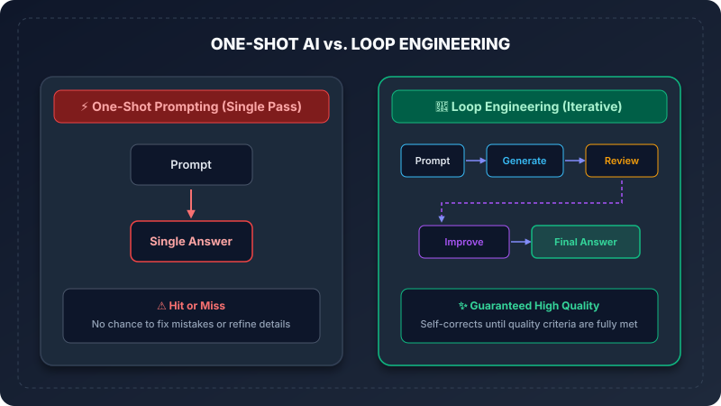
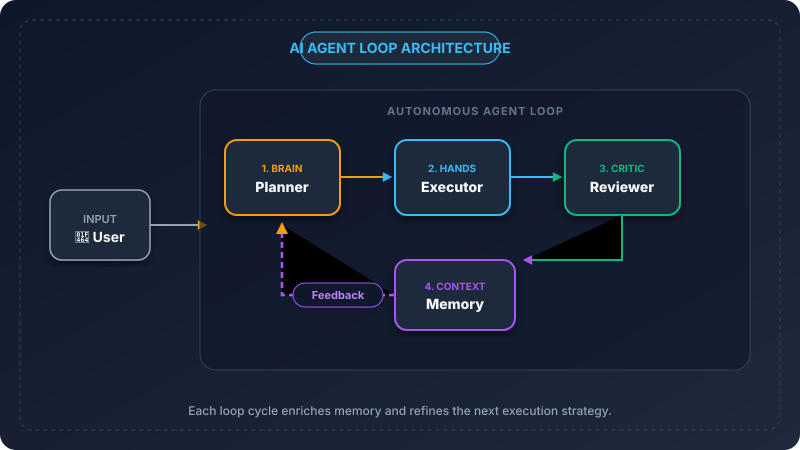
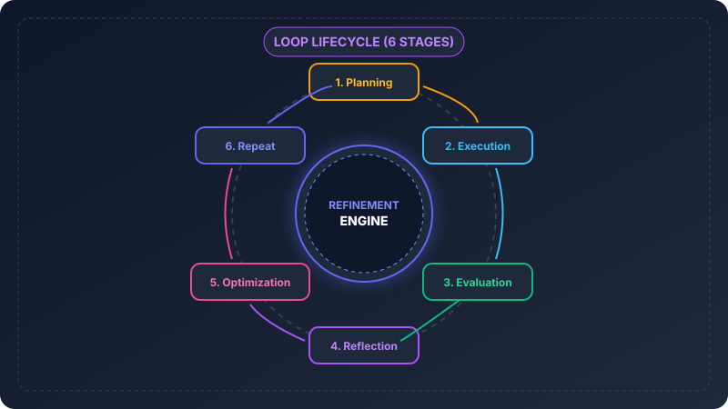
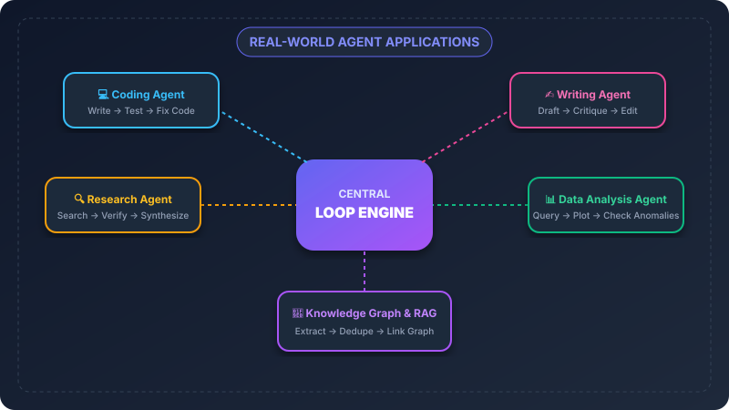
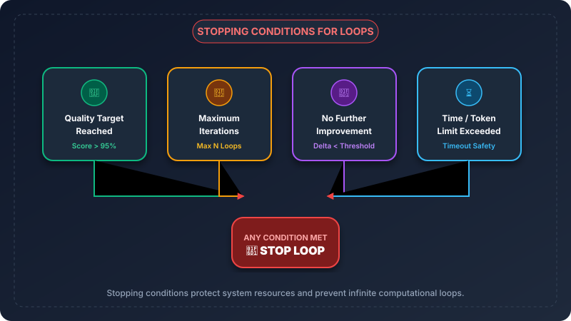

Issue #5: Loop Engineering — What Makes AI Agents Improve Themselves?
Why the best AI output doesn't come from a single guess, but from continuous self-refinement.

Imagine asking a chef to cook a complex signature dish in one single attempt—without tasting the broth, adjusting the spices, or checking the oven temperature.
No matter how talented the chef is, the result won't be perfect. Great cooking requires tasting, tweaking, and refining before serving.
That is the essence of Loop Engineering. It is the system design pattern that transforms AI from a one-shot guessing engine into a self-improving autonomous agent.
What is Loop Engineering?
Loop Engineering is the practice of designing closed-loop feedback systems around an AI model so it can evaluate its own work, fix errors, and iteratively improve output until quality targets are met.
Think of a writer crafting an essay:
- Draft 1: Outline thoughts quickly (raw draft).
- Review: Re-read for clarity, logic gaps, and grammar errors.
- Revision: Rewrite weak paragraphs and polish flow.
Without a review-and-edit loop, human writing stays unpolished. Loop Engineering gives AI models that exact same self-editing workflow.
Why AI Needs Loops
Most people interact with AI through one-shot prompting: they send a prompt, get an answer, and accept whatever comes out.
For simple questions, one-shot works fine. But for complex tasks—like writing software, conducting deep research, or generating reports—single pass AI breaks down.

| Feature | ⚡ One-Shot Prompting | 🔄 Loop Engineering |
|---|---|---|
| Execution | Single prompt & answer | Iterative generate-review cycles |
| Error Handling | Fails silently on mistake | Self-detects & fixes errors |
| Output Quality | Capped by single guess | Compounding quality ceiling |
| Best For | Quick Q&A, simple summaries | Coding, research, complex tasks |
The Core Loop
Every loop engineering system operates on five fundamental steps:
- Plan: Deconstruct the objective into clear, manageable steps.
- Generate: Create the initial draft or execution attempt.
- Review: Evaluate output against strict constraints or test cases.
- Improve: Apply targeted corrections based on review feedback.
- Repeat: Pass refined context back into the loop until verified.
How AI Agents Use Loops
Autonomous AI agents do not rely on a single prompt. Instead, they split work across specialized functional nodes:

- 🧠 Planner: Deconstructs user requests into structured step-by-step action plans.
- 🛠️ Executor: Calls tools, runs code, or writes content for the current step.
- 🔍 Reviewer: Validates output against rules, unit tests, or quality benchmarks.
- 💾 Memory: Stores feedback history so subsequent iterations learn from past mistakes.
The 6-Stage Loop Lifecycle
To guarantee stable and deterministic outcomes, professional agent systems follow a 6-stage lifecycle:

- Planning: Defining target metrics, schemas, and action sequences.
- Execution: Running tools, querying models, or generating code.
- Evaluation: Measuring accuracy, schema validity, or syntax correctness.
- Reflection: Analyzing why an evaluation check failed.
- Optimization: Constructing precise corrective instructions.
- Repeat: Re-entering execution with updated context.
Real-World Applications
Loop Engineering powers every modern flagship AI workflow you rely on today:

- 💻 Coding Agents: Write code → run test suite → catch error trace → rewrite code → tests pass.
- ✍️ Writing Assistants: Outline → draft section → check tone & length → edit prose.
- 🔍 Research Agents: Search web → cross-verify facts → identify gaps → search again.
- 🧠 Knowledge Base & RAG: Extract entities → deduplicate notes → link graph → verify connections.
Stopping Conditions: Knowing When to Stop
Loops without boundaries are dangerous. They consume API credits, increase latency, and can fall into endless cycles.

A resilient loop engine requires clear Stopping Conditions:
- 🎯 Quality Target Reached: Output passes all validation checks or test cases.
- 🔢 Maximum Iterations: Safeguard limit (e.g., stop after 5 iterations).
- 🛑 No Further Improvement: Output delta between loops is below threshold.
- ⏳ Time / Token Limit: Budget cap prevents resource exhaustion.
Step-by-Step Example: Refining a Technical Article
Watch how a loop transforms a weak, generic draft into a high-quality article:
Prompt: "Write about AI context windows."
Output: "Context windows are how much text AI can read at once. Bigger is better."
Review Feedback: ❌ Too brief, lacks technical depth, missing real-world analogies.
Prompt: "Expand with a real-world analogy and detail limits."
Output: "Context windows are like an AI's workbench memory. A 128k window holds ~300 pages..."
Review Feedback: ⚠️ Good analogy, but missing actionable developer guidance.
Prompt: "Add key developer takeaways and formatting."
Output: "Context windows measure transient working memory. 3 rules: 1) Compress prompts..."
Review Feedback: ✅ All quality criteria satisfied (Score: 98/100).
Best Practices Checklist
✅ DO
- Define concrete, measurable evaluation criteria.
- Keep iteration history in memory to avoid repeating mistakes.
- Set hard upper bounds on iteration count (max 3–5 iterations).
❌ DON'T
- Don't pass vague feedback like "make it better".
- Don't run loops without stopping conditions.
- Don't over-engineer simple tasks that only require one-shot answers.
Common Mistakes to Avoid
- ♾️ Infinite Loops: Running without max iteration safeguards, burning API budget.
- 🙈 Blind Loops: Repeating prompts without evaluating intermediate output quality.
- 💬 Weak Feedback: Telling the model that it failed without explaining how to fix it.
- 🎨 Over-Polishing: Running 10+ iterations when quality plateaued at iteration 3.
Summary Recap
The magic of AI agents isn't single-pass brilliance. It's the patience of iterative refinement.
One-shot prompting gets you a quick draft. Loop Engineering gets you production-ready quality.